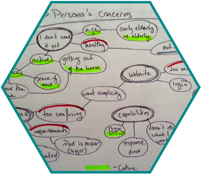
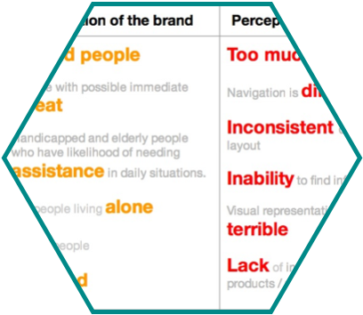
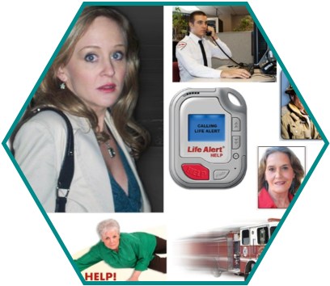
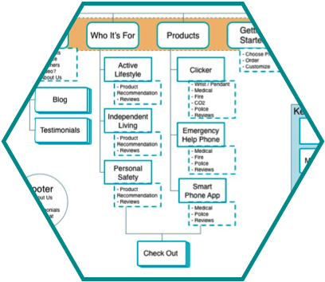

LifeAlert


We were tasked with "improving the existing digital solutions for current customers" at LifeAlert, according to the brief which our instructors wrote for us. LifeAlert is known around the world as the company that spawned the "help I've fallen and I can't get up" joke. We realized that it was going to be difficult to move current users to digital solutions. It was also going to be very difficult for LifeAlert to expand their user base with such a negative brand perception, especially with friendlier competitors entering the medical alert device market.
This realization made us re-evaluate the problem statement in the brief we were given. Talking to instructors, we decided that it was appropriate to shift our focus to altering the public perception of the LifeAlert brand by revamping the website and improving potential customer education to build trust in the brand.
Improve existing digital solutions for current customers. Shifted to rebranding to inspire trust and provide education.
Clickable prototype of the rebranded website, along with research and design triggers to justify our changes.
User research and testing. Third-party and market research. Understanding design triggers. Sketches, wireframes, personas, flows, storyboards, Information Architecture.
I collaborated with two other classmates, Jacob Swift and Swapna Kulkarni, on every aspect of this project. Our first task was to gather user research about how the service is used, as well as evaluating LifeAlert's current digital offerings.
We worked together on every aspect of the project, though we each took charge of areas of our own specialty. Swapna took on the persona and storyboard sketches, and market research and analysis. Jacob led the user testing side, and was able to create a Net Promoter Score from the responses we got. I wrote user surveys, created wireframes and mockups, analyzed the current information architecture, built a new site map and user flows, and integrated psychological design triggers into our design.
Deliverables slides.

It was difficult at first to find users, especially on our one-week time frame. However, we hit the pavement and were able to find a number of friendly people on the street who were happy to share their ideas and experiences with medical alert devices.
I wrote up several user surveys that we sent out to friends and family about their perception of LifeAlert, which was incredibly useful. We then sent out a follow-up survey containing our prototype to gauge the change in perception, both from people who had responded to the initial survey as well as from those who hadn't.
The information from our first perception survey is what we took to the instructors to back up our request to change the scope of the project to a full rebranding of the service.

As a way to quantify the changes we could make to the site, we did an informal Site Audit of the current LifeAlert website. We were able to identify more than a dozen fonts on a single page, inconsistent image size and format, use of negative images, and an alarming color scheme.
This Site Audit gave us a good idea of how and where to start with the design. We combined this with the survey responses about what information users would expect to be able to find on the site.

Based on the personas we developed, we also identified the core homan concerns that each persona represented - remaining active, independent, and secure. This was a breakthrough moment that gave us a great push to develop the "lifestyles" aspect of the site, which also piggybacked on design triggers like appealing to values and chunking.
This detailed understanding of our personas allowed us to recreate the Information Architecture of the LifeAlert website in ways that our personas would be able to understand. We wanted to have an underlying structure that would be simple and clear, while directing users in a flow through education to purchase regardless of their entry point on the site.
Due to the time contstraints on the project, we weren't able to accomplish all of the restructuring we had planned. Our design is flexible and allows for additional sections.